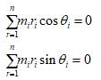
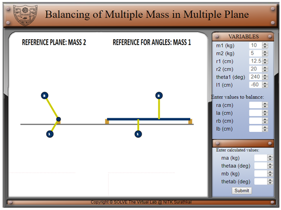
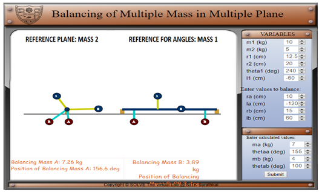

Objective:
After completing the simulation experiments on balancing of multiple masses in different plane one should be able to
(i) Calculate the additional mass required for balancing the unbalanced force.
(ii) Find out the angular position of the additional masses used for balancing.
Introduction:
The high speed of engines and other machines is a common phenomenon now-a-days. It is, therefore, very essential that all the rotating and reciprocating parts should be completely balanced as far as possible. If these parts are not properly balanced, the dynamic forces are set up. These forces not only increase the loads on bearings and stresses in the various members, but also produce unpleasant and even dangerous vibrations.
The Phenomena can be explained as follows. Consider a real system as shown below; two gears are mounted on the shaft. The centre of gravity of both gears are not coinciding with the axis of the shaft which creates the unbalancing in the system. These unbalanced masses create centrifugal force in the system, which is equals to mrω2 and generates unfavourable vibrations in the system with the frequency of motor speed. It is essential that while designing the system, balancing of unbalance forces must be balanced.
Figure 1 : Two gears mounted on the shaft
Let us consider the free body diagram of the above system. The unbalanced masses of two gears can be represented as 1 and 2, which is acting some distance from the centre of the axis.
Figure 2: two plane unbalances
To put the system in complete balance, two balancing masses are placed in two different planes,
Parallel to the plane of rotation of the disturbing mass, in such a way that they satisfy the following two conditions of equilibrium.
1. The net dynamic force acting on the shaft is equal to zero. This requires that the line of action of balanced and unbalanced centrifugal forces must be the same. In other words, the centre of the masses of the system must lie on the axis of rotation. This is the condition for static balancing.
The condition required to balancing the dynamic forces in horizontal and vertical direction, which is equivalent to:

The net couple due to the dynamic forces acting on the shaft is equal to zero. In other words, the algebraic sum of the moments about any point in the plane must be zero.
The condition required to balancing a couple of moments in horizontal and vertical direction, which is equivalent to:

Figure 3: Balancing in Multiple Planes
Here we known the information about unbalanced mass value, position and angle with respect to axis and balanced mass position with respect to the axis is known. The unknown parameters are balanced masses and angle with respect to the axis. These four unknown parameters can find out from four algebraic equation (equation 1, 2, 3 and 4).

Aim:
Find the balance masses and position
Procedure:
- In the beginning, two masses rotate at a fixed angular velocity about a centre shaft at a fixed angular velocity (ω = 2 rad/s). The parameters, namely the unbalance masses, the radii of rotation of the masses from the centre shaft, the angle between the masses and the distance between the two planes, take default values in the beginning as shown in the below figure. These parameters can then be changed by the user depending on his/her problem.
 - The user is asked to enter the values of radii of rotation at which the balancing masses have to be added and also their relative distances from the reference plane.
- Calculate the mass and angle by the analytical method.
Forces :
Moment :
- Enter the calculated values then submit.
 - Do the comparison of results.


- Assume the suitable data and calculate the mass and position (angle) and compare the result with analytical.